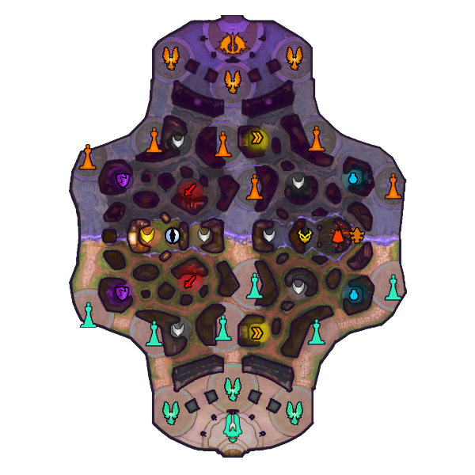
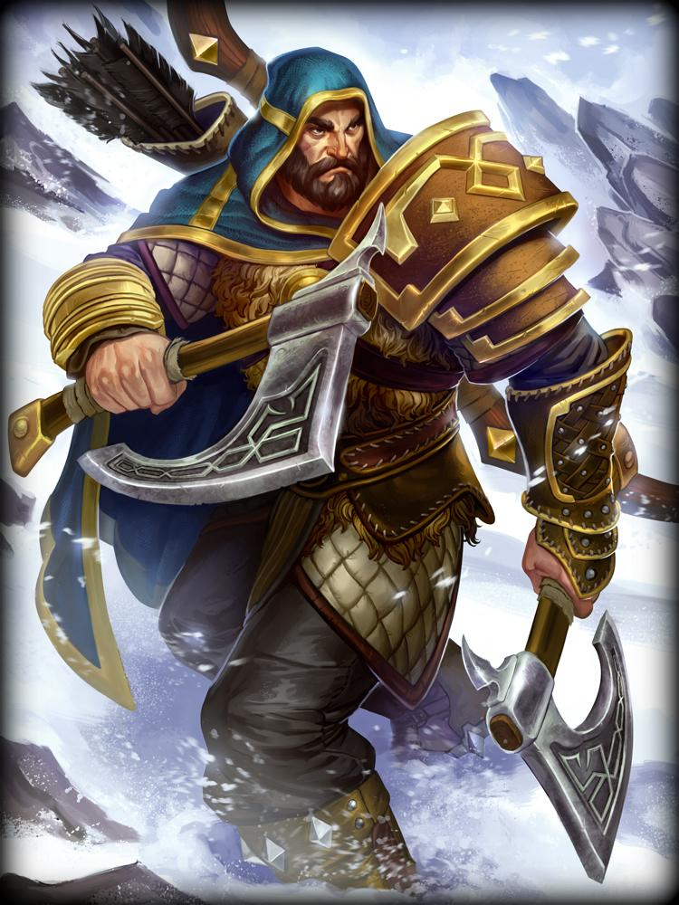
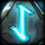
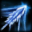
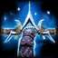
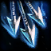

| Conquest | Ullr |
|---|---|
| Below is the map of Smites main gamemode Conquest. The Conquest map contains buffs that the Gods of Smite can pick up to enhance their abilities to help them win the game! |
Below is my most played God Ullr. He is a Hunter class God and mainly uses his abilities to deal large amounts of damage rather than his basic attacks like other Hunters in the game. |
|  |  |
| Artwork | Abilities | Descriptions |
|---|---|---|
|  | Weapon Master | When Ullr uses an ability in either stance his cooldowns in the opposite stance are reduced. |
|  | Bladed Arrow | Ullr fires a bladed arrow in a line, dealing damage and passing through all targets it hits. |
|  | Expose Weakness | Ullr gains bonus Physical Power for 5s. |
|  | Hail of Arrows | Ullr fires a volley at his target location, dealing damage. |
| Wield Bow | Ullr uses his bow, removing Disarms and gaining additional attack speed. |